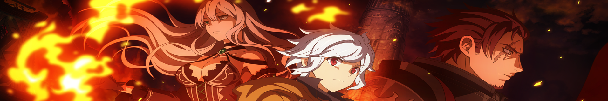
Yami Anime Realm
Visit Us on youtube
Most Anticipated and Best Spoiler (Danmachi)
Danmachi Season 6 Completed | Vol.19, Vol.20, Vol.21 Full Review
Danmachi Season 7 Volume 21 Full Review-The Expedition to Save Ais Wallenstein and Loki Familia
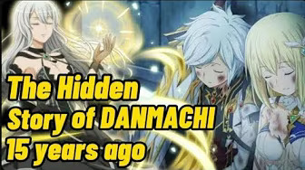
The Story of the Past | Bell Parents | Zeusand Hera Familia - Revealed
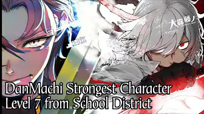
Leon Vandenberg Level 7 Reveal is INSANE! DanMachi Season 6
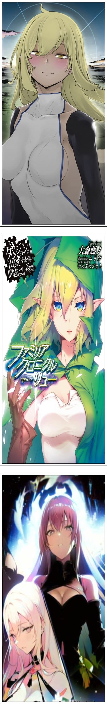
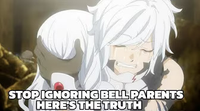
Bell Parents Revelation | What Really Happened in the Past
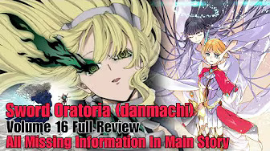
Sword Oratoria Volume 16 Full Review - The Battle Meant to End Everything
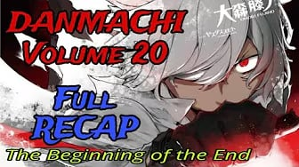
Danmachi Update: Volume 20 Overall RECAP | The Tragedy that befell to Loki Familia(WipeOut)
Loki Reaction When She Knew Her Familia had been WipeOut on 60th Floor | Detailed Review
Top Ranking and List of Mysteries (Danmachi)
Top 25 Strongest Characters in DanmachiIs it Wrong to Try to Pick Up Girl in a Dungeon?
Top 20 Strongest Monsters in Danmachi
Top 20 Strongest Magic/Skill in Danmachi |Is It Wrong to Try to Pick Up Girls in a Dungeon?
TOP 20 WAIFUS RANKED IN DANMACHI Is It Wrong to Try to Pick Up Girls in a Dungeon?
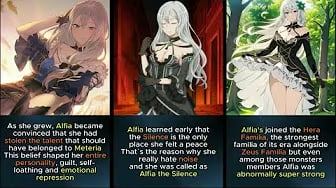
ALL YOU NEED TO KNOW ABOUT ALFIA | DANMACHI | IS IT WRONG TO PICK UP A GIRLS IN A DUNGEON?
Danmachi Timeline from 1000 years agoup to the Main Story Begins
Everything About Ais Past and Frozen Ice Garden Mystery | DANMACHI
All 25 Mysteries in Danmachi | Is It Wrong to Try to Pick Up Girls in a Dungeon?
Best Music and Theme Song (Danmachi)
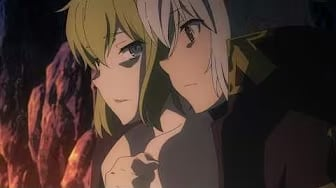
DanMachi The Best Theme Song - Bell X Ryuu | Argonaut and the Gale
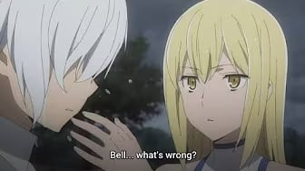
Danmachi - Tribute for Bell X Ais | Two Souls One FlameTwo Souls One Flame
Separate or Isolated Spoilers (Danmachi)
Danmachi:Level 7 in the School District is Stronger than Ottar
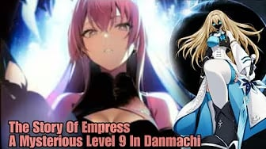
The Truth About Mysterious Level 9 in Danmachi: The Untold Story of the Empress Explained
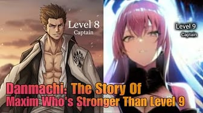
Maxim: The Strongest Hero of Zeus Familia Untold Story
Finn’s Awakening: The Kiss That Saved Tione - Sword Oratoria Volume 16
Danmachi Volume 21 - Official Content (Not a Theory)
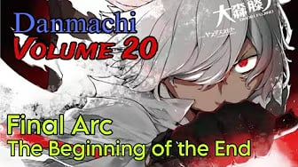
Danmachi Volume 20 Review | The Beginning of the End | Season 7
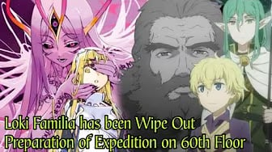
They Want The Help of Bell and Hestia Familia but Loki did not Agree | Loki Familia WipeOut
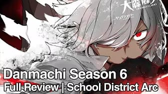
Danmachi Season 6 Full Review of Vol. 19, Vol. 20 - Bell The Met Strongest Character of Current Era